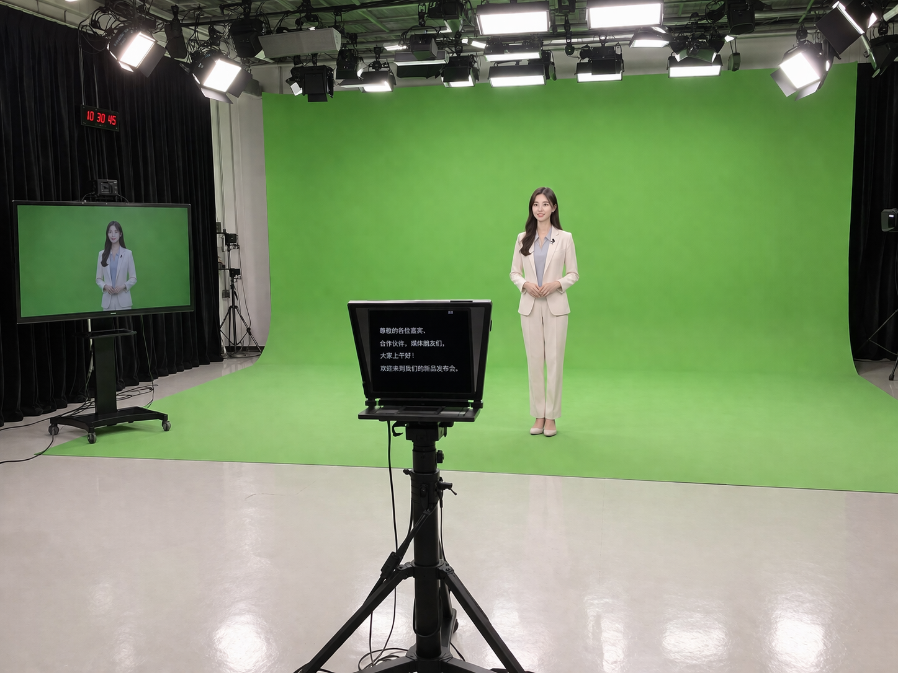
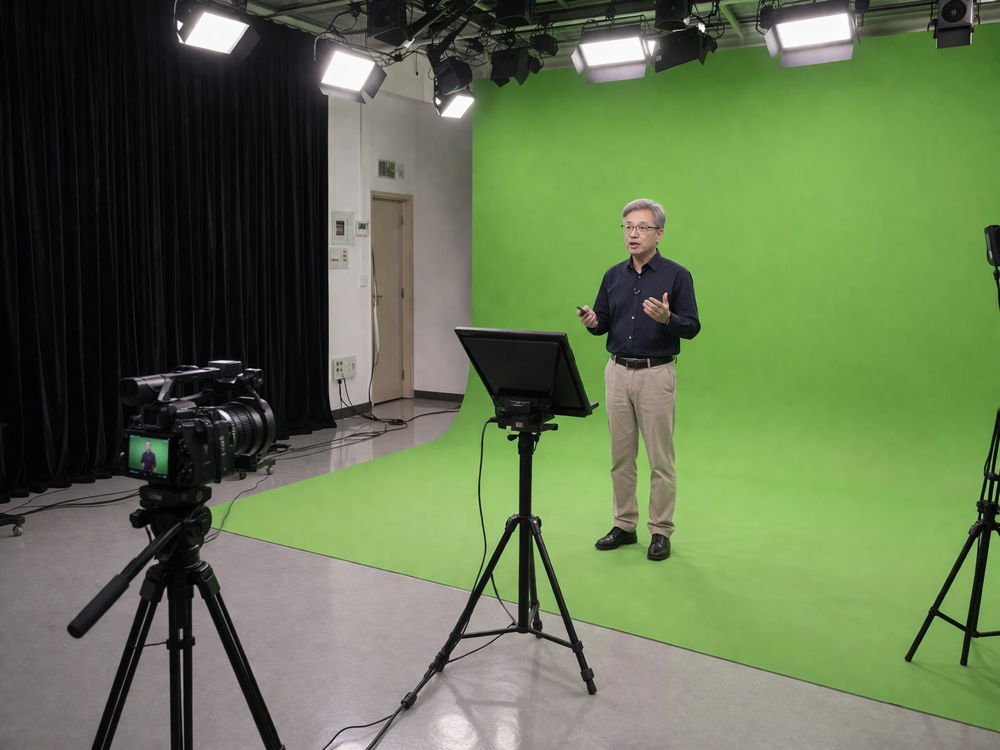
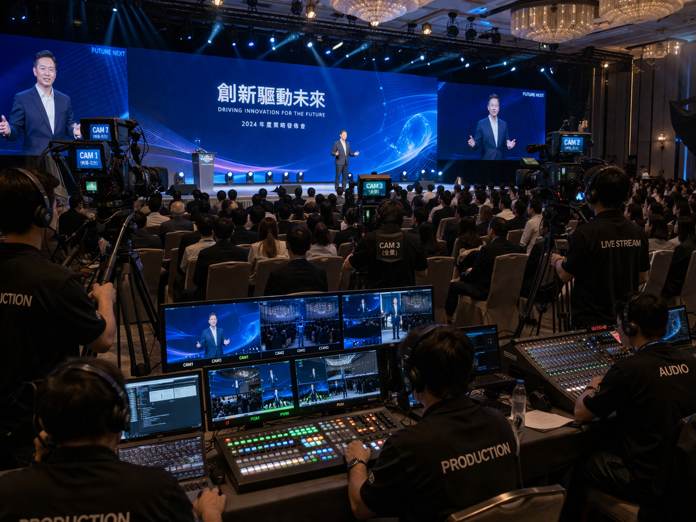

01
企業直播方案
適用於記者會、產品發表、內部會議、品牌直播等需求， 可整合講者、簡報、畫面切換與直播輸出。
- 適合品牌直播與企業活動
- 支援簡報、講者與多機位畫面切換
- 提升直播畫面專業度與流程穩定性

從企業直播、教育錄製到品牌內容與活動製播， 提供更符合實際使用情境的系統與場地搭配方式。
適用於記者會、產品發表、內部會議、品牌直播等需求， 可整合講者、簡報、畫面切換與直播輸出。

適合學校、補教、企業內訓與知識型內容製作者， 協助建立更穩定的教材錄製與教學拍攝環境。

針對品牌訪談、論壇型內容、人物專題與形象節目， 以更有層次的場景與鏡位規劃提升整體質感。
提供適合活動型內容的空間與系統支援， 包含論壇、講座、發表會、內部活動紀錄等。

不是固定模板，而是依照內容形式與使用情境給出更合適的配置。
把場地、設備、製播邏輯與交付需求一起考慮，減少後續反覆調整。
不論是企業簡報、品牌直播或節目錄製，都更容易達到穩定且一致的畫面品質。